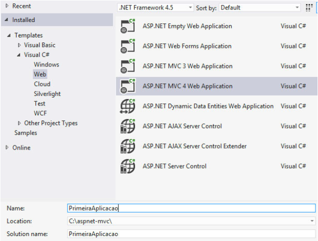
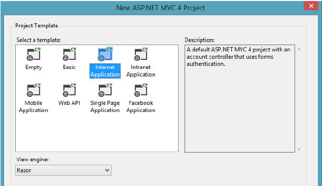
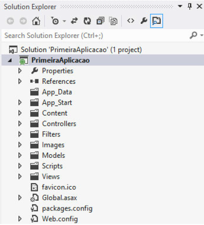
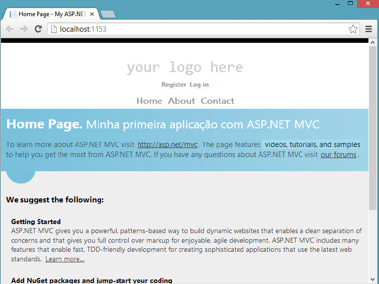

ASP.NET - O primeiro programa
Criaremos uma aplicação ASP.NET MVC simples que, evidentemente, exibirá uma mensagem de texto "Minha primeira aplicação com ASP.NET MVC" (para esquecer um pouco do "Hello World!"). O objetivo aqui é apresentar o Visual Studio e as ferramentas lá disponíveis para se trabalhar com ASP.NET MVC.
Com o Visual Studio em execução, navegue até a opção File > New > Project. Nossa intenção é criar uma nova aplicação para web — desta forma, na janela que se apresentará, você deverá selecionar do lado esquerdo a opção "web" e na sequência (lado direito), "ASP.NETMVCWeb Application". A figura abaixo apresenta a janela com a seleção mencionada:
Na sequência, você precisará escolher o tipo de projeto (próxima figura) ASP.NET MVC que deseja criar. Isto porque, acoplado ao Visual Studio, a Microsoft disponibiliza alguns templates pré-construídos de projetos para ajudá-lo a endereçar a demanda da aplicação e, claro, ajudá-lo a “poupar trabalho” na estruturação do projeto, trazendo, por exemplo, plugins normalmente utilizados (jQuery, OData, EntityFramework etc.). Para a construção deste primeiro exemplo, utilizaremos o modelo Internet Application.
Após a criação do projeto, você verá no "Solution Explorer" (janela onde os arquivos do projeto são dispostos) do seuVisual Studio, uma estrutura de projeto parecida com aquela apresentada pela figura abaixo. Não se preocupe agora com os detalhes estruturais do projeto, eles serão explicados em detalhes durante a apresentação do código fonte do projeto da Loja Virtual.
Muito embora o Visual Studio já crie uma estrutura de projeto funcional, antes de executar a aplicação pela primeira vez, faremos uma pequena modificação no corpo da mesma. No Solution Explorer, navegue até o arquivo “HomeController” ( SeuProjeto > Controllers > HomeController). No método Index, faremos uma alteração simples: modificaremos uma mensagem que é exibida por padrão, na página inicial. Modifique o texto atribuído à propriedade “View- Bag.Message” para “Minha primeira aplicação com ASP.NET MVC”:
Alterando o texto de exibição na página inicial:
public ActionResult Index()
{
ViewBag.Message = "Minha primeira aplicação com ASP.NET MVC";
return View();
}
Compile o projeto (você pode utilizar a tecla F5 como atalho para executar esta tarefa) e quando o site for carregado em seu navegador, a mensagem que acabamos de adicionar deverá ser exibida, a exemplo do que apresenta a figura:
Parabéns! Você acabou de criar e “publicar” (localmente, é claro), sua primeira aplicação ASP.NET MVC.